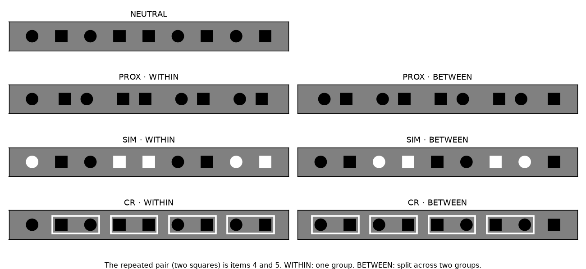

Experiments That Don't Lose Data
Trial matrices, frame-accurate timing, and escape hatches,
in Python and PsychoPy, using the lab's grouping task.
Keys: → next · ← back · R reference view · F fullscreen
Today's plan
| Time | What |
|---|---|
| 0:00 | Setup: run the finished task once as ID 999 |
| 0:05 | Part 1 · The trial matrix: design → table → file, before trial 1 |
| 0:25 | Part 2 · Timing and efficiency: frames, flips, and the negative-RT bug |
| 0:45 | Part 3 · Never lose data: ESC, crashes, resume, overwrite, counterbalancing |
| 1:05 | Part 4 · Annotate: code someone else can trust |
| 1:10 | Hands-on: break it on purpose, then recover |
We'll compare three scripts: a lab MATLAB experiment (attentional blink, Psychtoolbox), the lab's PsychoPy RDT, and today's grouping_task.py.
Get the files and run it once
- The repo → Code → Download ZIP, unzip.
- PsychoPy → View → Coder → open
06_advanced_psychopy/grouping_task.py→ green Run. - Participant ID
999(debug: small window, short blocks). Do the practice and one block. - Open
data/debug/. You should see999_trials.csv,999_behav.csv,999_info.csv.
999_trials.csv already lists every trial of the session, including the ones you haven't run yet. Why would you want that?
No PsychoPy handy? python test_trial_matrix.py and python trial_matrix.py run with plain Python + pandas.
A mini Repetition Discrimination Task

3 cues (PROX, SIM, CR) × WITHIN/BETWEEN × 4 positions × 2 shapes + 8 NEUTRAL = 56 trials per block. Press n/m for square/circle.
An experiment script has three jobs
- Show the right thing: every trial in the planned order, nothing missing, nothing repeated.
- At the right time, and measure it: durations to the frame; RTs from the moment the display appeared.
- Never lose what happened: an ESC, a crash or an experimenter mistake can't cost data or make anyone redo work.
The rule (STUDY_CONVENTIONS.md, section 4): no crash, keypress or experimenter mistake should ever lose data or force a participant to redo work.
Job 3 is the one most lab scripts skip, because it only matters on the bad day.
A design is a table
Every factor × every level = a full factorial. One row per combination.
MATLAB (attentional blink): columns are numbers you must rememberTmat = fullfact([nletters,3,2,3]);
% column 1 is letter_num, column 2 is the stim type, column 3 is letter_color,
% column 4 is the lag number, column 5 is probe 1 true 0- false
Tmat(:, 2) = Tmat(:,3);
Tmat(Tmat(:,4)==2, 4) = 7;for cue, wbn, pos, shape in itertools.product(CUES, WBN_LEVELS, TARG_POSITIONS, TARG_TYPES):
rows.append({"Cue": cue, "WBN": wbn, "Targ_Pos": pos, "Targ_Type": shape})Six months later, what does Tmat(:,4)==2 mean? What does row["WBN"] == "WITHIN" mean?
Name things; don't number them
- Names, not column numbers.
row["Cue"]can't silently point at the wrong column when someone inserts one. - Levels as words.
"WITHIN", not1. The saved file is readable without a codebook. - No magic numbers.
Dmat([11:2026],:): where does 2026 come from? Name it (N_PADDING) or compute it. - Every level of the design in one place, at the top of
trial_matrix.py.
CUES = ["PROX", "SIM", "CR"]
WBN_LEVELS = ["WITHIN", "BETWEEN"]
TARG_POSITIONS = [3, 4, 5, 6]
TARG_TYPES = ["SQUARE", "CIRCLE"]
N_ITEMS = 9Shuffle, with rules and a seed
def shuffle_with_limit(rows, rng, max_run=MAX_RUN):
rows = list(rows)
for _ in range(MAX_SHUFFLES):
rng.shuffle(rows)
if longest_run([r["Cue"] for r in rows]) <= max_run:
return rows
raise RuntimeError("Could not meet the run limit in %d shuffles." % MAX_SHUFFLES)- Constraint: never more than 3 trials in a row with the same cue. Shuffle, check, repeat ("rejection sampling"). Simple, and every allowed order is equally likely.
- A limit on tries, so an impossible rule fails loudly instead of freezing the lab computer.
rng = random.Random(seed): the seed is saved in_info.csv. Same seed → the exact same session.
Build the whole session, save it, then start
Lab RDT (PsychoPy): shuffles each block when it starts. Lab AB (MATLAB): builds each block's trials inside the block loop. Neither writes the plan anywhere.
After a crash, the trials already shown can't be reconstructed, and a restarted block gets a new random order.
seed = random.randrange(1, 10**6)
trials = tm.build_session(N_BLOCKS, seed, debug=debug)
trials = tm.add_response_keys(trials, keys["SQUARE"], keys["CIRCLE"])
write_csv(trials, paths["trials"])<subid>_trials.csv is the plan: every block, every trial, its correct key, before trial 1. _behav.csv is what happened. A resume replays the plan.
Debug mode: same code, fewer trials
blocks = [(0, one_per_cell(design, rng, 1))] # practice: 7 trials
for block in range(1, n_blocks + 1):
rows = one_per_cell(design, rng, 2) if debug else design # debug 14, real 56
blocks.append((block, rows))- ID
999switches debug on: every trial type still appears, so every code path runs, in 2 minutes instead of 10. - Debug files go to
data/debug/, so they can never be mistaken for a participant. - The MATLAB AB script got half of this right: its "Practice Block" runs as subject 999. But it saves in the current folder, next to everything else.
Why not a separate "test version" of the script with fewer trials?
Answer
Then you're testing a different program. A bug that only exists in the real version (a path, a block-count off by one) passes every test.
Test the design without a screen
$ python test_trial_matrix.py
PASS: 56 conditions (48 cued + 8 neutral)
PASS: every main block has every condition exactly once
PASS: no cue appears more than MAX_RUN times in a row
PASS: same seed -> same session
PASS: debug keeps every Cue x WBN cell in every block
PASS: every display: exactly one repeated pair, of the
right shape, WITHIN or BETWEEN groups as labelled
All checks passed.trial_matrix.pyhas no PsychoPy in it, so it runs on any laptop.- The last check reads each display back and confirms it shows what its label says. Swap WITHIN and BETWEEN in
layout()and it fails. - Run it after every change to the design.
In Workshop 5, how would you know if WITHIN and BETWEEN had been swapped in the experiment?
Answer
You wouldn't. Every effect would come out negative and look like a surprising finding. Only a check on the displays themselves catches it.
The screen is the clock
- A monitor redraws every frame (60 Hz → 16.7 ms).
win.flip()waits for the next one and returns its time. - You can only show things for whole frames. So count frames, not seconds.
- Measure the refresh rate, don't assume it. Save it in
_info.csv.
hz = win.getActualFrameRate(nIdentical=20, nMaxFrames=120, threshold=1)
def frames(seconds, hz):
return max(1, round(seconds * hz))
show_frames(win, kb, [stims["fixation"]], frames(FIXATION_S, hz))MATLAB AB: off_time = 0.033; % 50 ms. The comment says 50, the code says 33. Comments are claims; check them like code.
Do the work before the flip
# once, before any trial: 9 squares, 9 circles, 4 boxes
"SQUARE": [visual.Rect(win, width=ITEM_SIZE, height=ITEM_SIZE,
lineWidth=0) for _ in range(tm.N_ITEMS)],
# each trial, during the fixation: only move and recolor
stim.pos = (display["x"][i] * SPACING, 0)
stim.color = display["colors"][i]- Creating a stimulus is slow (it builds textures). Changing one is fast.
- Both lab scripts get this right: the AB script draws every letter × color into offscreen windows before the block; the RDT pre-creates its shapes.
- Rule of thumb: while a stimulus is on screen, only draw and flip. Compute, load and save before or after.
Remember the negative RTs?
# Lab RDT02_Lab.py, inside run_trial(), after the "press space" screen:
trial_clock = core.Clock() # clock starts BEFORE the first flip
...
keys = event.getKeys(keyList=[square_key, circle_key, 'q', 'escape'],
timeStamped=trial_clock) # old presses are still in the bufferevent.waitKeys(keyList=['space']) removes only the space press. An n pressed while the break screen was up stays in the buffer, becomes the next trial's answer, with a time before the clock started: RT = −0.94 s. The buffer was only cleared at the end of each trial.
# grouping_task.py
kb.clearEvents() # throw away anything pressed before the display
win.callOnFlip(kb.clock.reset) # RT = 0 at the flip that SHOWS the displayThe response loop, frame by frame
for frame in range(frames(MAX_RESPONSE_S, hz)):
for stim in to_draw:
stim.draw()
flip_time = win.flip()
if frame == 0:
onset = flip_time # the display's real onset, from the flip
pressed = kb.getKeys(keyList=response_keys + [QUIT_KEY], waitRelease=False)
if any(k.name == QUIT_KEY for k in pressed):
raise QuitRequested
if pressed:
key, rt = pressed[0].name, pressed[0].rt
break- Onset comes from the flip, not from
GetSecs()before or after it. - The timeout is a frame count, so it's exact. ESC is checked on every frame.
win.recordFrameIntervalscounts dropped frames per block; they go in_info.csv.
When to touch the disk
| Script | Writes data… | Risk |
|---|---|---|
| Lab AB (MATLAB) | once, at the end of each block | a crash loses the whole block |
| Lab RDT (PsychoPy) | after every trial (opens and appends to the CSV) | disk time inside the trial sequence; a half-written line if it dies mid-write |
grouping_task.py | at every break screen, and on ESC / crash / end | a crash loses at most the trials since the last break, and those are re-run on resume |
def write_csv(table, path):
tmp = path.with_suffix(".tmp")
table.to_csv(tmp, index=False)
os.replace(tmp, path) # swap in one step: never a half-written fileWhat happens when someone presses ESC?
MATLAB AB, inside the response loopif keyCode(escapeKey)
...
ShowCursor;
sca;
returnThe block's trials and timing only exist in memory until the block ends. return throws them away. Nothing says the session was aborted. And ESC is only checked on the response screen, not during the letter stream.
Lab RDT: ESC returns None, the loop breaks, earlier trials are already in the file. Better, but the file looks like a normal, shorter session.
One way out, and it always saves
try:
run_blocks(win, kb, stims, state, hz, args.auto, args.crash_at)
finish(state, "complete")
except QuitRequested:
finish(state, "aborted") # ESC: save first, then quit
except Exception:
finish(state, "crashed") # anything else: save, then show the error
raise
finally:
win.close()- ESC anywhere →
raise QuitRequested. No screen has its own quitting code. finish()stampsStatusandSession_End, then saves.- A real error is saved and still shown (
raise), so nobody misses it. finallycloses the window whatever happened.
Resume: same trials, nothing deleted
MATLAB AB: "Restart Crashed Block" asks the RA to type the subject and block, then builds a new random block. And a typo (exist('crashedinfo', 'Var') vs crashinfo) means the "restarting" event code is never sent. No error, ever.
grouping_task.py: enter the same ID → Resume.
- Reads
Last_Block_Completedfrom_info.csv. - Replays
_trials.csvfrom the next block. - Rows from the interrupted block stay, marked
Valid = False. - New row in
_info.csv:Run = 2, crash comments.
Run (debug: --auto --crash-at 20, then --resume) | Block | Valid | rows |
|---|---|---|---|
| 1 | 0 (practice) | True | 7 |
| 1 | 1 (crashed on trial 20) | False | 12 |
| 2 | 1, 2 | True | 28 |
Overwrite means move, never delete
# Lab RDT02_Lab.py: "File already exists" -> choose Overwrite, then:
with open(out_filename, 'w') as f: # 'w' empties the old file. It's gone.
f.write(','.join(csv_cols) + '\n')One wrong ID typed by an RA (102 instead of 112) and choosing Overwrite destroys participant 102's session. No undo.
def archive(paths, subid):
"""Overwrite = MOVE the old files to overwritten/<subid>_<timestamp>/. Never delete."""Plus a second confirmation ("The old files will be MOVED…"). Two clicks and a folder you can restore from.
Counterbalancing: let the sheet decide
# Lab RDT02_Lab.py
sub_number = int(sub_id_str) if sub_id_str.isdigit() else 0
if sub_number % 2 == 1: square_key, circle_key = 'm', 'n'
else: square_key, circle_key = 'n', 'm'The pilots had IDs like A12, A13, … Which keys did they get?
Answer
"A12".isdigit() is False → 0 → even → every pilot got the same keys. Nothing was counterbalanced, and nothing in the data says so.
counterbalancing.py: each new real participant takes the firstopenrow ofcounterbalancing.csv. Pilots (1–100) and debug (999) take no slot.crash_report.py: a bad session is markedexcludedwith a reason, and a new slot with the same condition goes to the front of the queue.
What's on disk, and when
| Moment | _trials.csv | _info.csv | _behav.csv |
|---|---|---|---|
| after the ID dialog | ✔ whole plan | ✔ running | — |
| every break screen | ✔ last block, dropped frames | ✔ all trials so far | |
| ESC | ✔ aborted | ✔ | |
| crash | ✔ crashed | ✔ | |
| power cut | last break | last break | |
| end | ✔ complete (+ sheet) | ✔ |
Even a power cut leaves who, when, which condition, the full plan and every completed block.
Code someone else can trust
"""
Project: RA Workshops, Workshop 6
Script: 06_advanced_psychopy/grouping_task.py
Purpose: A small version of the lab's RDT ...
Usage: python grouping_task.py --auto
Dependencies: psychopy (2026.1), pandas, ...
Reads: data/<subid>_info.csv, ...
Writes: data/<subid>_trials.csv ...
"""
FIXATION_S = 0.5 # seconds, fixation cross
FALLBACK_HZ = 60 # used only if the refresh
# rate can't be measured- Header: what, how to run, what it reads and writes.
- Every setting has its unit and where the value came from.
- Comment the why:
# clearEvents: a key pressed during the break must not count, not# clear events. - Name the workaround and the problem it works around, so nobody "cleans it up".
- No commented-out code (the AB script has dozens of lines of it). Git keeps old versions.
Break it on purpose, then recover
- ESC. Run as 999, press ESC in the middle of block 1. Open
999_info.csv: what's theStatus? How many rows in_behav.csv? - Crash.
python grouping_task.py --auto --crash-at 20, then--auto --resume. Find theValid = Falserows. Which trials were re-run? - Overwrite. Run 999 again, choose Overwrite. Where did the old files go?
- Design. Add
"EC"toCUESintrial_matrix.py. Run the tests. What breaks, and why? (Hint:layout()and the test'sgroups().) - Code review. Find one more way the RDT or AB script could lose or corrupt data that we didn't cover.
Before any real participant
- ☐ The whole trial sequence is generated and saved before trial 1 (with its seed).
- ☐ Design tests pass without a screen.
- ☐ Durations are frame counts from a measured refresh rate; onsets come from flips.
- ☐ Key buffer cleared before each display; RT clock reset on its flip.
- ☐ Files written only at breaks, through temp-file-then-swap.
- ☐ ESC and crashes go through one exit path that saves and records the status.
- ☐ Resume replays the saved plan; interrupted rows kept as
Valid = False. - ☐ Overwrite archives; it takes two confirmations.
- ☐ Counterbalancing comes from the sheet, not from the ID's digits.
- ☐ A debug run (ID 999) finished cleanly on the testing computer, and its files open in the Workshop 5 analysis.
Cheat sheet
| You want to… | Code |
|---|---|
| every combination of factors | itertools.product(A, B, C) |
| reproducible randomness | rng = random.Random(seed) · rng.shuffle(x) · rng.sample(x, k) |
| measure the refresh rate | win.getActualFrameRate() (can return None) |
| seconds → frames | round(seconds * hz) |
| onset of a display | t = win.flip() |
| RT from the flip | kb.clearEvents(), win.callOnFlip(kb.clock.reset), then k.rt |
| check keys without waiting | kb.getKeys(keyList=[...], waitRelease=False) |
| count dropped frames | win.recordFrameIntervals = True · win.nDroppedFrames |
| save safely | write file.tmp, then os.replace(tmp, path) |
| move instead of delete | shutil.move(src, dst) |
| quit from deep inside | raise QuitRequested, caught once in main() |
| simulated participant | python grouping_task.py --auto |
Common problems
| Problem | Likely cause / fix |
|---|---|
| "could not measure the refresh rate" | Another app is busy, or the display is mirrored. The script uses 60 Hz and says so; check Refresh_Hz in _info.csv. |
| Many dropped frames | Close other programs; laptop on power; one screen only. Recheck with a debug run. |
| Next launch hangs after a crash | A leftover PsychoPy/ioHub process. Close PsychoPy fully (Task Manager) and restart. |
| Dialog hidden behind a fullscreen window | Dialogs come before the window opens; if one is stuck, Alt+Tab. |
SheetError: No counterbalancing sheet | Make one: python counterbalancing.py --new A B --n 40 |
Participant … was excluded in a crash report | By design: an excluded ID is never reused. Run the person under a new ID. |
| Mac: keys not detected | System Settings → Privacy & Security → allow PsychoPy under Input Monitoring and Accessibility. |
Experiment → file → analysis
Run a debug session, then point the Workshop 5 habits at your _behav.csv:
count, look at extremes, one number per person.
Every problem you found in the analysis last time had its cause in the experiment code.
Materials: github.com/slopez4/RA_Workshops